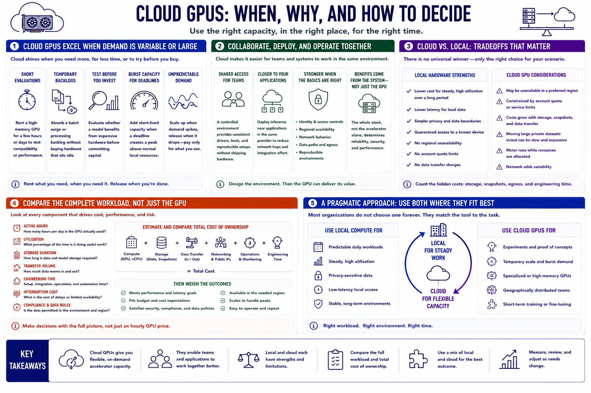

When Cloud GPUs Make Sense
Connecting to LMS... Progress: in progress

Narration
Cloud GPUs are strongest when demand is temporary, uncertain, or larger than local capacity. A team can rent a high-memory accelerator for a short evaluation, absorb a temporary batch backlog, or test whether a model benefits from hardware that would be expensive to purchase. Burst capacity also helps when a normal local environment is sufficient most of the time but a deadline creates a short-lived peak.
Shared remote access can make cloud resources attractive to distributed teams. A controlled environment can provide consistent drivers, tools, and data paths without shipping hardware to every participant. Cloud deployment also places inference closer to applications already running in the same provider, which may reduce integration effort. These benefits depend on identity controls, regional availability, network behavior, and a reproducible setup rather than on the GPU alone.
Local hardware may be cheaper for steady, high utilization over a long period, especially when power and maintenance are manageable. It can offer lower latency for local data, simpler privacy boundaries, and guaranteed access to a known device. Cloud capacity may be unavailable in a preferred region, constrained by account quota, or expensive once storage and transfer are included. Moving a large private dataset into and out of the cloud can erase the convenience of fast provisioning.
Compare the complete workload. Estimate active hours, utilization, storage duration, transfer volume, engineering time, and the cost of interruptions. Consider whether the data is permitted in the chosen environment. A useful decision is rarely cloud versus local forever. Many organizations use local compute for predictable daily work and rent cloud GPUs for experiments, temporary scale, or specialized memory requirements.